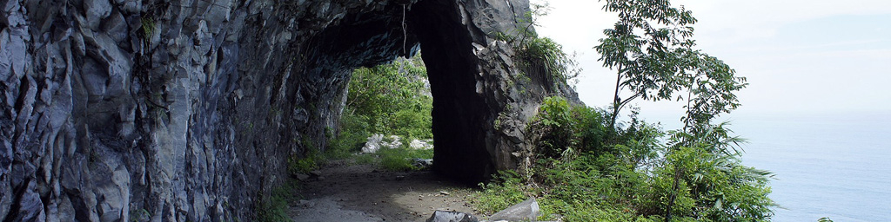
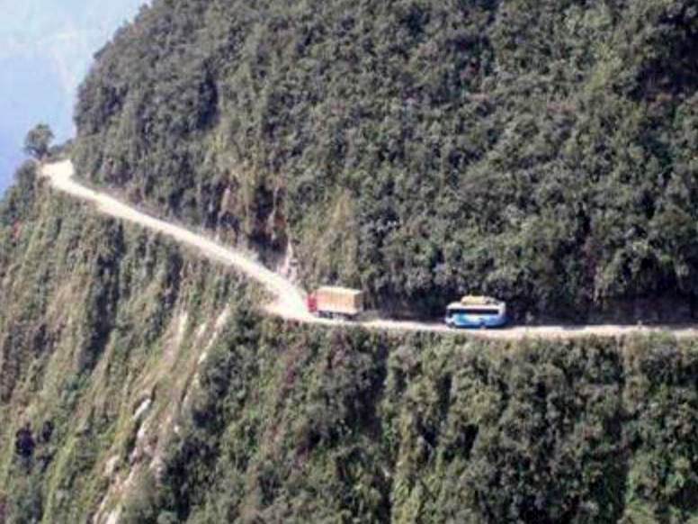

The Highway From Hell
The Su-ao to Hualien East Coast Highway
|
The Suhua Highway (蘇花公路), also called the Suao-Hualien Highway, is a 73 mile (118-kilometer) section of the Provincial Highway 9 in Taiwan, starting at Su'ao Township, Yilan County and ending at Hualien City, Hualien County. With a portion built alongside very steep cliffs high above the Pacific Ocean, it is considered to be one of Taiwan's most dangerous but also most scenic drives. Today, it's been modernized, but our trip down it was back in the old days when it was vey primitive and undeveloped and one-way.  The above picture IS NOT a picture of the Su-ao to Hualien highway. It is actually a picture of a highway in Bolivia which a friend sent me. However, it reminded me so much of the Su-ao to Hualien highway, I included it here so readers could get the idea of what it was like. If you notice immediately in front and to the left of the red and yellow lead truck, there is a little bit of highway that bulges out towards the edge. It was little 'passing zones' like this where I often found myself pulling my little red Volkswagen over to let opposite direction trucks pass, since my slowness caused me to be going 'the wrong way' once the highway was opened up to traffic going south to north; technically speaking, the northbound trucks now had the right-of-way. It was quite scary, and, as it got darker, it got even scarier! You can't imagine how relieved we were to see the lights of Hualien at the southern end of this treacherous highway. Update, April 25, 2013: I just found these pictures on the web, real pictures of the old Suao to Hualien highway. This one is what most of the highway was like, while this one shows some of the tunnels cut through the hard rock mountains along the ocean shore. Here's one more old black and white picture. |
{kind=link}
{kind=link}
{kind=link}
{kind=link}